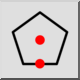
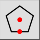
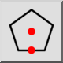
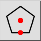

Polígono (Centro, Aresta)
Barra de Ferramenta / Ícone:
 

Menu: Draw > Forma > Polígono (Centro, Aresta)
Atalho: P, G, 3
Comandos: polygoncs | pg3
Esta é uma tradução automática.
Barra de Ferramenta / Ícone:
 

Menu: Draw > Forma > Polígono (Centro, Aresta)
Atalho: P, G, 3
Comandos: polygoncs | pg3
Cria polígonos com o centro e o ponto médio de um lado.